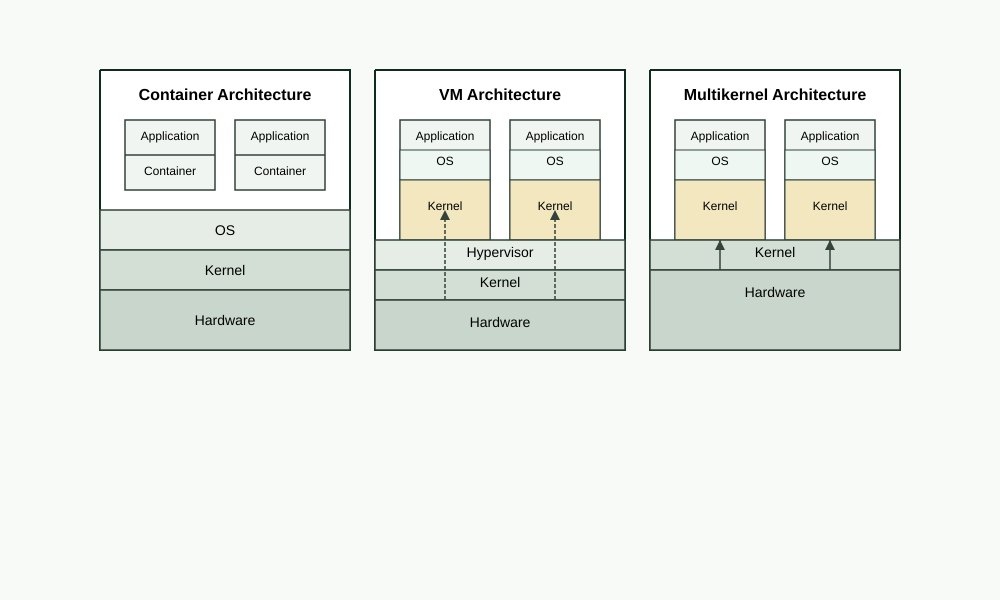

The Multikernel system offloads all device drivers and interrupt processing to a dedicated device-kernel. Applications run in isolated app-kernels with dedicated resources and native hardware performance.
A traditional Linux kernel runs application code, device drivers, and interrupt handlers on the same cores. Under load, interrupt processing steals CPU cycles from applications. Kernel workarounds like isolcpus, irqaffinity, NAPI threaded mode, and RPS/RFS reduce the problem but cannot eliminate it. Within a single kernel, bottom-half work can always reach application cores.
The split-kernel architecture removes this contention at the design level. Device processing is offloaded to a dedicated kernel on dedicated cores. Applications run in their own kernels where interrupts are structurally absent. Because Multikernel runs directly on hardware with no hypervisor, it works inside any standard cloud VM, providing kernel-level isolation without the performance penalty of nested virtualization.
Three components working together: isolated app-kernels for applications, a shared device-kernel for all I/O, and a lock-free shared memory layer connecting them.
Each application runs in its own Linux kernel on dedicated cores. These kernels contain no device drivers, no interrupt handlers, and no network stack. Practically all compute and memory resources go directly to the application.
All device drivers, interrupt handlers, TCP/IP stack, and I/O processing run in a dedicated device-kernel on its own cores. This kernel serves every app-kernel and has its own independent update and failure domain.
App-kernels and the device-kernel communicate through DAXFS, a filesystem built on shared DRAM with lock-free CAS-based coordination. Zero-copy, no serialization, no network round trips.
Built entirely on existing Linux infrastructure. No new OS, no custom hypervisor, no compatibility gaps.
New kernel instances launch using Linux's kexec mechanism, extended to boot alongside the running kernel rather than replacing it. Each spawned kernel starts on its assigned CPUs and memory, fully independent.
CPUs, memory, and device queues are assigned to each kernel using standard Linux hotplug interfaces. Resources can be rebalanced between kernels at runtime without rebooting.
Modern NICs and NVMe devices expose multiple hardware queues. The device-kernel gets exclusive access to device queues. No software bridge, no SR-IOV. True hardware-level I/O isolation.
Spawned kernels boot directly into Docker images using DAXFS to share the container rootfs. No full OS init per instance. Applications run unmodified with standard Linux interfaces.
The split-kernel architecture combines the isolation of separate kernels with native hardware performance, without the overhead of virtualization or the limitations of kernel tuning.

| Capability | Containers | VMs | Multikernel |
|---|---|---|---|
| Isolation | Shared kernel | Full (hypervisor) | Separate kernels |
| Performance overhead | Minimal | 5-20% | None |
| Kernel customization | No | Yes | Yes, per workload |
| Dynamic resource allocation | Yes | Limited | Yes (CPU/memory hotplug) |
| Zero-downtime kernel updates | No | With orchestration | Yes |
| Attack surface per workload | Full kernel | Reduced | Minimal (stripped kernel) |
| Noisy neighbor effect | Yes | Reduced | Eliminated |
| Works inside cloud VMs | Yes | Requires nested virt | Yes |
The split-kernel architecture enables workloads that require strong isolation, predictable performance, or independent kernel lifecycle management.
Trading systems, real-time analytics, and game servers where interrupt jitter affects outcomes. App-kernel cores see zero interrupts by design.
Each AI agent runs in its own app-kernel with full GPU access and kernel-level isolation. No virtualization layer between the agent and hardware.
Replace the device-kernel while applications continue running. Roll back a bad driver update without restarting a single workload.
A driver crash in the device-kernel does not affect application kernels. The device-kernel recovers independently while applications continue running.
Run databases, web servers, and ML training on the same machine. Each workload gets its own kernel with dedicated resources and no noisy neighbors.
Share data across kernel instances or CXL-connected hosts through DAXFS with lock-free concurrent access and a shared page cache.